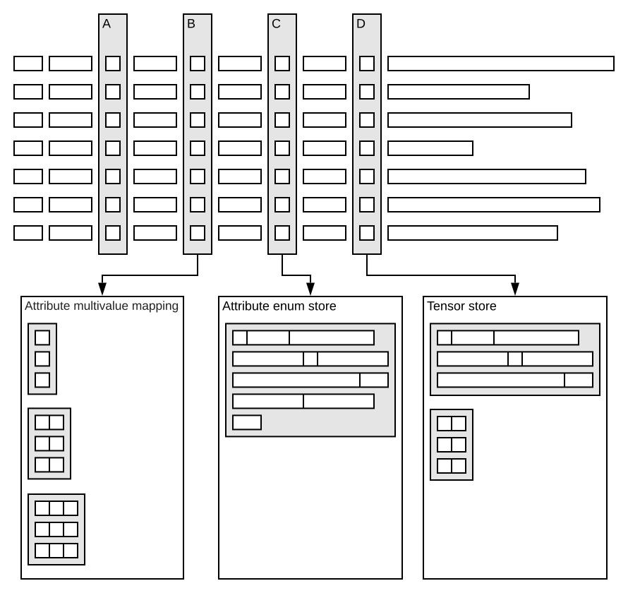
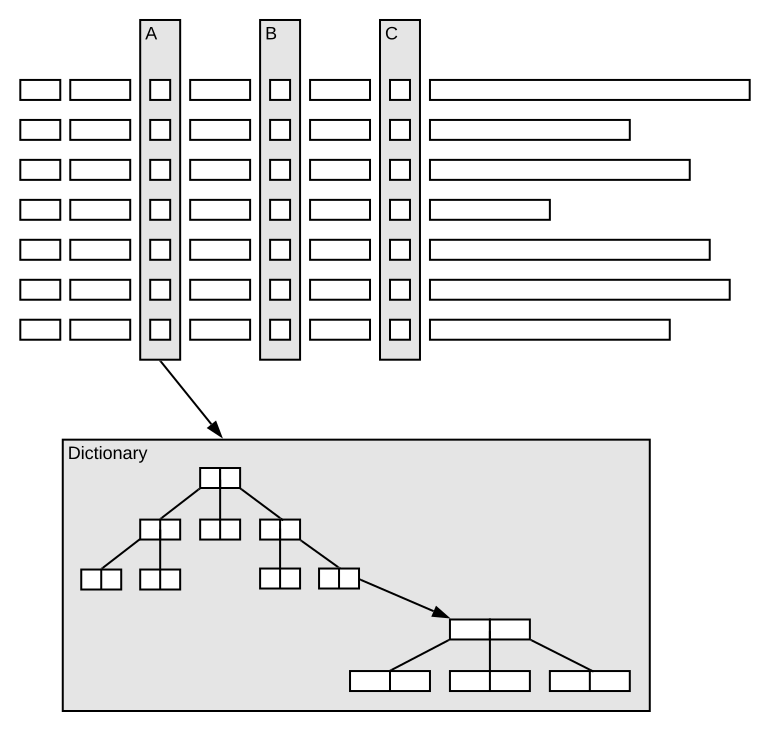

An attribute is a keyword in schemas, specifying the indexing for a field. An attribute is an in-memory data structure:
field price type int {
indexing: attribute
}
Use attribute when the field is used in:
Or, the other way around, use index for fields used for text search, with stemming and normalization.
Attributes speed up query execution and document updates, trading off memory. As data structures are regularly optimized, consider both static and temporary resource usage - see attribute memory usage below. Use attributes in document summaries to limit accesses to storage to generate result sets. Configuration overview:
| fast-search |
Also see the reference.
Add an index structure to improve query performance:
field titles type array<string> {
indexing : summary | attribute
attribute: fast-search
}
|
|---|---|
| fast-access |
For high-throughput updates, all nodes with a replica should have the attribute loaded in memory.
Depending on replication factor and other configuration, this is not always the case.
Use fast-access
to increase feed rates by having replicas on all nodes in memory -
see the reference
and sizing feeding.
field titles type array<string> {
indexing : summary | attribute
attribute: fast-access
}
|
| distance-metric |
Features like nearest neighbor search
require a distance-metric,
and can also have an hsnw index to speed up queries.
Read more in approximate nearest neighbor.
Pay attention to the field's index setting to enable the index:
field image_sift_encoding type tensor<float>(x[128]) {
indexing: summary | attribute | index
attribute {
distance-metric: euclidean
}
index {
hnsw {
max-links-per-node: 16
neighbors-to-explore-at-insert: 500
}
}
}
|
The Attribute Multivalue Mapping stores arrays of values for array and weighed set types, the Attribute Enum Store stores all unique strings for all string attributes:
Attributes can be:
| Type | Size | Description |
|---|---|---|
| Single-valued | Fixed | Like the "A" attribute, example a 32 bit integer attribute. The element size is the size of the type, like 8 bit for a byte. A memory buffer holding all values in an array. |
| Multi-valued | Fixed |
Like the "B" attribute, example array<int> - a memory buffer holding values.
|
| Multi-valued | Variable |
Like the "B" attribute, example array<string>.
A memory buffer holding references (32 bit) to a memory structure with objects for each size class -
e.g. for an array<string> the string values are put in the attribute enum store
and referred to from the attribute multivalue mapping.
|
| Single-valued | Variable | Like the "C" attribute, example string. One large memory buffer holding references (32 bit) to a memory structure with objects per unique value. |
| Tensor | Fixed / Variable | Like the "D" attribute - a tensor is a multivalued datatype with sparse and/or dense dimensions, stored in the tensor store. Dense dimensions resemble the attribute multivalue mapping, as elements are fixed in size and numbers. Sparse dimensions is implemented more like the attribute enum store as key names are variable. |
The "A", "B", "C" and "D" attribute memory buffers have attribute values in Local ID (LID) order - see document meta store.
When updating an attribute, the full value is written. This also applies to multivalue fields - example adding an item to an array:
This means that larger fields will copy more data at updates. It also implies that updates to weighted sets are faster when using numeric keys (less memory and easier comparisons).
Whenever the Attribute Multivalue Mapping or Attribute Enum Store are full (they are bound), feeding is blocked - learn more.
Without fast-search, attribute access is a memory lookup,
being one value or all values, depending on query execution.
An attribute is a linear array-like data structure -
matching documents potentially means scanning all attribute values.
Setting fast-search creates a dictionary, an index structure for quicker lookup. This uses more memory, and also more CPU when updating documents. It increases steady state memory usage for all attribute types and also add initialization overhead for numeric types. The default index structure is a b-tree of attribute values, pointing to an occurrence b-tree of local doc IDs for each value:
Notes:
fast-search is not observable in the files on disk, other than size
Using fast-search has many implications, read more in
when to use fast-search.
Attribute structures are regularly optimized and this causes temporary resource usage - read more in maintenance jobs. The memory footprint of an attribute depends on a few factors, data type being the most important:
Collection types like array and weighted sets increases the memory usage some, but the main factor is the average number of values per document. String attributes are typically the largest attributes, and requires most memory during initialization - use boolean/numeric types where possible. Example, refer to formulas below:
schema foo {
document bar {
field titles type array<string> {
indexing: summary | attribute
}
}
}
When doing the capacity planning, keep in mind the maximum footprint, which occurs during initialization. For the steady state footprint, the number of unique values is important for string attributes.
Check the Example attribute sizing spreadsheet, with various data types and collection types. It also contains estimates for how many documents a 48GB RAM node can hold, taking initialization into account.
Multivalue attributes use an adaptive approach in how data is stored in memory, and up to 2 billion documents per node is supported.
Pro tip: The proton /state/v1/ interface can be explored for attribute memory usage. This is an undocumented debug-interface, subject to change at any moment - example: http://localhost:19110/state/v1/custom/component/documentdb/music/subdb/ready/attribute/artist
Attribute sizing is not an exact science, rather an approximation. The reason is that they vary in size. Both number of documents, number of values and uniqueness of the values are variable. The components of the attributes that occupy memory are:
| Abbreviation | Concept | Comment |
|---|---|---|
| D | Number of documents | Number of documents on the node, or rather the maximum number of local document ids allocated |
| V | Average number of values per document | Only applicable for arrays and weighted sets |
| U | Number of unique values | Only applies for strings or if fast-search is set |
| FW | Fixed data width | sizeof(T) for numerics, 1 byte for strings, 1 bit for boolean |
| WW | Weight width | Width of the weight in a weighted set, 4 bytes. 0 bytes for arrays. |
| EIW | Enum index width | Width of the index into the enum store, 4 bytes. Used by all strings and other attributes if fast-search is set |
| VW | Variable data width | strlen(s) for strings, 0 bytes for the rest |
| PW | Posting entry width | Width of a posting list entry, 4 bytes for singlevalue, 8 bytes for array and weighted sets. Only applies if fast-search is set. |
| PIW | Posting index width | Width of the index into the store of posting lists; 4 bytes |
| MIW | Multivalue index width | Width of the index into the multivalue mapping; 4 bytes |
| ROF | Resize overhead factor | Default is 6/5. This is the average overhead in any dynamic vector due to resizing strategy. Resize strategy is 50% indicating that structure is 5/6 full on average. |
| Component | Formula | Approx Factor | Applies to |
|---|---|---|---|
| Document vector | D * ((FW or EIW) or MIW) | ROF | FW for singlevalue numeric attributes and MIW for multivalue attributes. EIW for singlevalue string or if the attribute is singlevalue fast-search |
| Multivalue mapping | D * V * ((FW or EIW) + WW) | ROF | Applicable only for array or weighted sets. EIW if string or fast-search |
| Enum store | U * ((FW + VW) + 4 + ((EIW + PIW) or EIW)) | ROF | Applicable for strings or if fast-search is set. (EIW + PIW) if fast-search is set, EIW otherwise. |
| Posting list | D * V * PW | ROF | Applicable if fast-search is set |
| Type | Components | Formula |
|---|---|---|
| Numeric singlevalue plain | Document vector | D * FW * ROF |
| Numeric multivalue value plain | Document vector, Multivalue mapping | D * MIW * ROF + D * V * (FW+WW) * ROF |
| Numeric singlevalue fast-search | Document vector, Enum store, Posting List | D * EIW * ROF + U * (FW+4+EIW+PIW) * ROF + D * PW * ROF |
| Numeric multivalue value fast-search | Document vector, Multivalue mapping, Enum store, Posting List | D * MIW * ROF + D * V * (EIW+WW) * ROF + U * (FW+4+EIW+PIW) * ROF + D * V * PW * ROF |
| Singlevalue string plain | Document vector, Enum store | D * EIW * ROF + U * (FW+VW+4+EIW) * ROF |
| Singlevalue string fast-search | Document vector, Enum store, Posting List | D * EIW * ROF + U * (FW+VW+4+EIW+PIW) * ROF + D * PW * ROF |
| Multivalue string plain | Document vector, Multivalue mapping, Enum store | D * MIW * ROF + D * V * (EIW+WW) * ROF + U * (FW+VW+4+EIW) * ROF |
| Multivalue string fast-search | Document vector, Multivalue mapping, Enum store, Posting list | D * MIW * ROF + D * V * (EIW+WW) * ROF + U * (FW+VW+4+EIW+PIW) * ROF + D * V * PW * ROF |
| Boolean singlevalue | Document vector | D * FW * ROF |
The document meta store is an in-memory data structure for all documents on a node. It is an implicit attribute, and is compacted and flushed. Memory usage for applications with small documents can be dominated by this attribute, particularly for store-only and streaming search applications.
The document meta store scales linearly with number of documents -
using approximately 30 bytes per document.
The metric content.proton.documentdb.ready.attribute.memory_usage.allocated_bytes for
"field": "[documentmetastore]" is the size of the document meta store in memory - use the
metric API to find the size -
in this example, the node has 9M ready documents with 52 bytes in memory per document:
{
"name": "content.proton.documentdb.ready.attribute.memory_usage.allocated_bytes",
"description": "The number of allocated bytes",
"values": {
"average": 4.69736008E8,
"count": 12,
"rate": 0.2,
"min": 469736008,
"max": 469736008,
"last": 469736008
},
"dimensions": {
"documenttype": "doctype",
"field": "[documentmetastore]"
}
},
The above is for the ready documents, also check removed and notready - refer to sub-databases.